From install
to
Checkmate
A quick-start guide for Demo Day reviewers and first-time users.
Follow these steps to install the app, play a match, and explore what's available.
Feature Walkthrough
A closer look at every screen and feature in Overthrow Chess.
This is the first page you'll see when you open Overthrow Chess. You can sign in with your email and password, use Sign in with Apple for a quick start on iOS, or create a new account. Signing up just takes a name, email, and password — and you'll be ready to play in seconds.
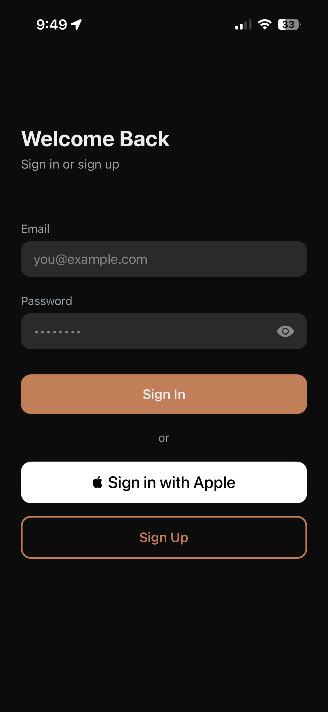
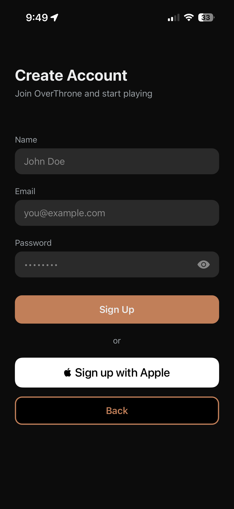
Home Screen
This is your home screen and the portal to the rest of the app. From here you can jump into four main activities: Play Online to match against other players, Play AI to practice against the computer, Puzzles to sharpen your tactics, and Game Modes for alternative ways to play. You can also find customization options. In the middle of the screen, you can change the color of your board, and if you click the top left, you can change your avatar. At the bottom, you'll find a navigation bar for Friends, Stats, and Settings.

Time Controls
When you tap Play Online, you'll choose your time control. Games are grouped into three speed categories: Bullet (1 min, 1|1, 1|2), Blitz (3 min, 3|2, 5 min), and Rapid (10 min, 15|10, 30 min). A format like '3|2' means 3 minutes on the clock with a 2-second increment added after each move. Pick your speed and hit Play Online to get matched. Your ELO rating (the standard score for global chess rankings) is different for each speed category, and will change automatically depending on the results of your games, and the rating of your opponent.
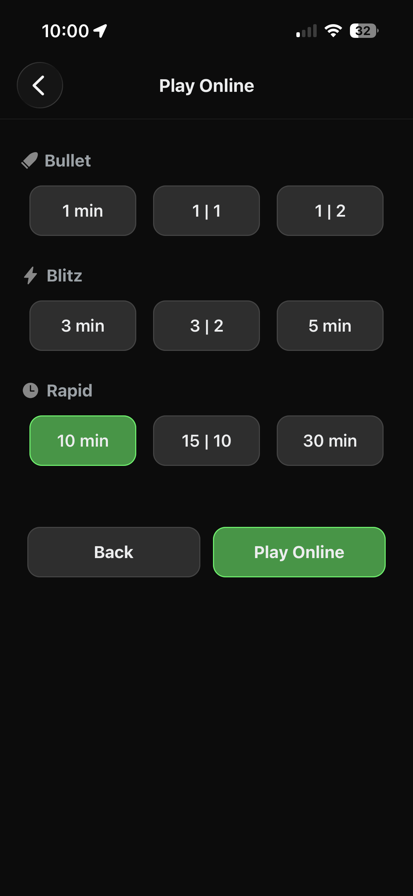
In Game
Once matched, you'll see the board with both players' names, ELO ratings, and countdown timers. The status bar at the top shows whose turn it is. Tap a piece to see its legal moves highlighted, then tap on or drag to the destination square to make your move. Your move list is tracked at the bottom of the screen.
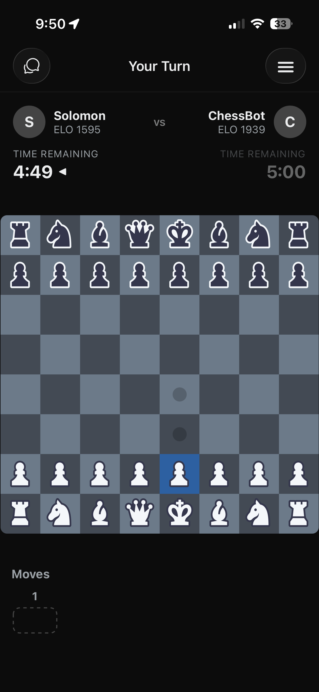
Game Over
When the game ends, you'll see the result — win, loss, or draw — along with how it ended (checkmate, resignation, forfeit, timeout, etc.). From here you can Analyze Game to review your moves with engine evaluation, Rematch Opponent for a rematch, or head back to the home screen.
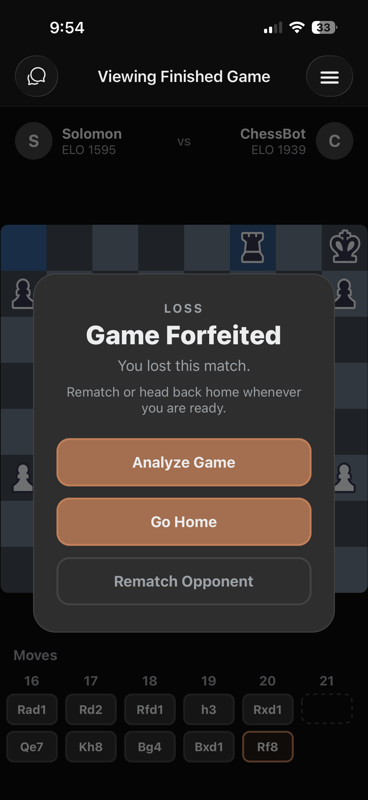
Game Analysis
The Game Analysis screen replays your game move by move with a Stockfish engine evaluation. Each move is color-coded: gray dots for book moves (moves at the start of a game that follow common starting patterns), yellow dots for good moves, green dots for great moves, blue dots for the best possible move, yellow dots for mistakes, and red dots for blunders (terrible moves). Tap any move to jump to that position and see the evaluation shift, what the best move was, and other top engine choices. This is one of the best tools you can use to learn and improve from your games.
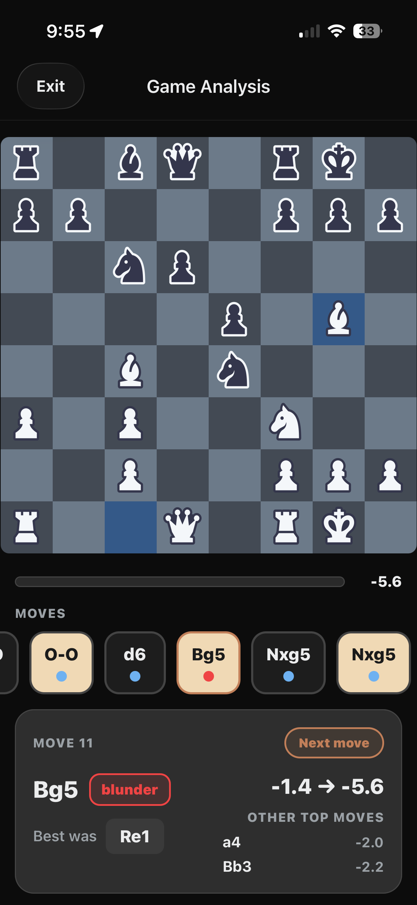
Play AI works just like Play Online — you pick a time control and start a game — but your opponent is ChessBot, an AI player with two difficulty levels. It's a great way to practice without the pressure of a live opponent.
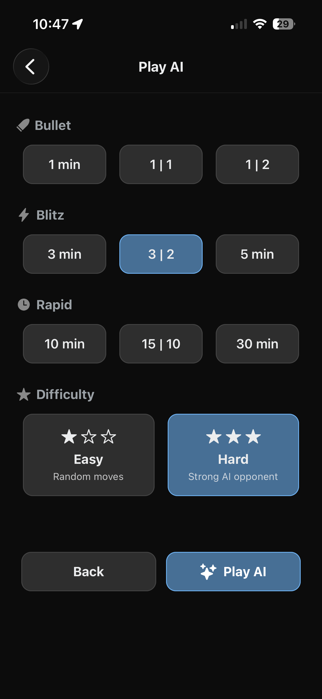
The Game Modes section offers alternative ways to play. Play in Person lets you pass the phone back and forth with someone sitting next to you. Chess 960 (also known as Fischer Random) shuffles the starting positions of the back rank pieces for a fresh challenge every game.
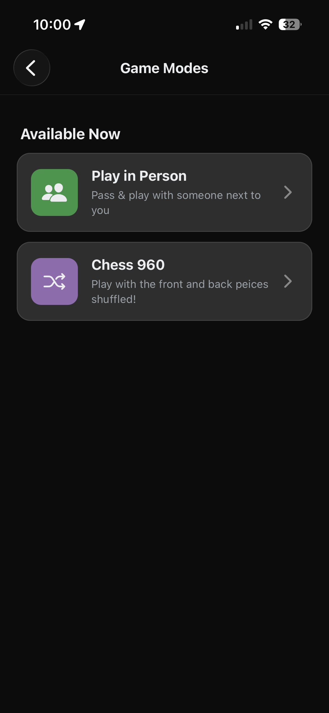
Puzzles are a type of popular single player chess game, and Overthrow Chess has over 5 million of them. A chess puzzle puts you in the middle of an ongoing game and challenges you to find the best possible move or chain of moves. There is only one correct solution to a given puzzle.
Puzzle Menu
The Puzzles section shows your current Puzzle Rating and offers two modes to choose from. Your puzzle rating is separate from your game ELO and adjusts based on how you perform.
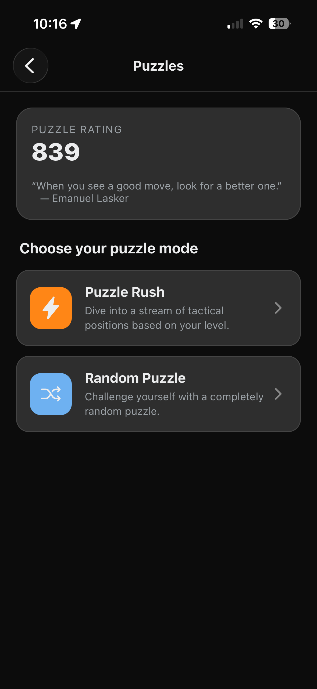
Puzzle Rush
Puzzle Rush throws a stream of tactical puzzles at you at your current puzzle ELO. You start with three lives (hearts) — get a puzzle wrong and you lose one. The timer is there to track how long you've taken for each puzzle. A hint button is available if you get stuck, which when activated, highlights the piece you should move next.
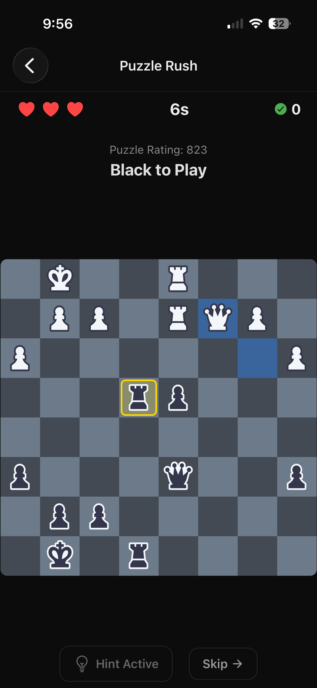
Random Puzzle
Random Puzzle gives you a single position at a time in a relaxed setting. The puzzle rating tells you how hard it is. Solve it by finding the best move (or sequence of moves), use the Hint button if you need a nudge, or Skip to move on to a new one.
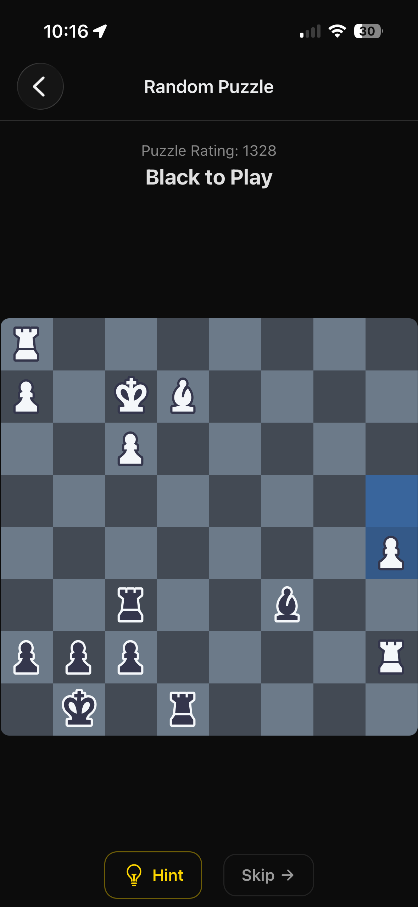
Finding Friends
Tap the Friends tab in the bottom navigation bar to search for other players. Your existing friends appear under My Friends, and you can search for new players by name. Tap Add Friend to send a request, and you'll see the status update to Requested until they accept.
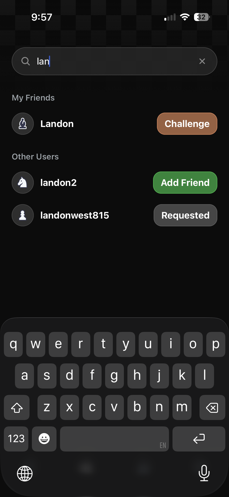
Challenging a Friend
Once someone is on your friends list, tap Challenge next to their name. You'll then pick a time control — the same Bullet, Blitz, and Rapid options — and hit Send Challenge. A 'Challenge Sent' banner confirms it went through. You can cancel a pending challenge at any time.
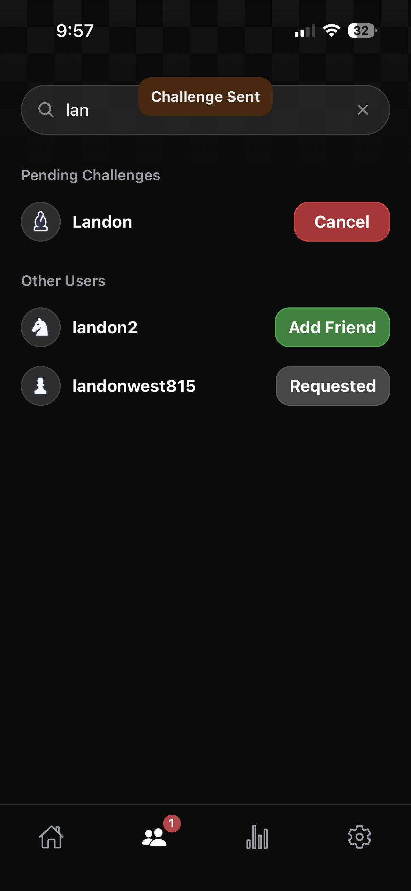
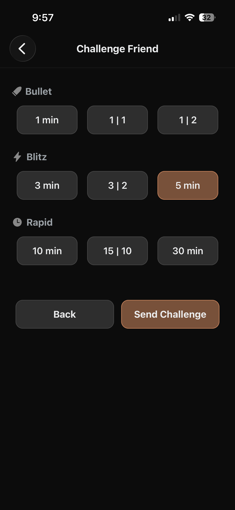
The Stats tab gives you a full picture of your performance. At the top, filter by game type: All, Bullet, Blitz, or Rapid. You'll see your Average Rating and Win-Loss-Draw record, along with a rating history graph that tracks your progress over time. Below that, Completed Matches lists your recent games with the opponent, time control, and rating change for each.
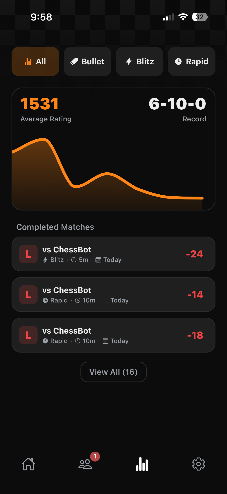
Settings Overview
The Settings tab lets you manage your account and preferences. From here you can access Customization (avatar and board themes), Voice Chat settings, and Sound controls. There's also a Sign Out option under the Danger Zone.
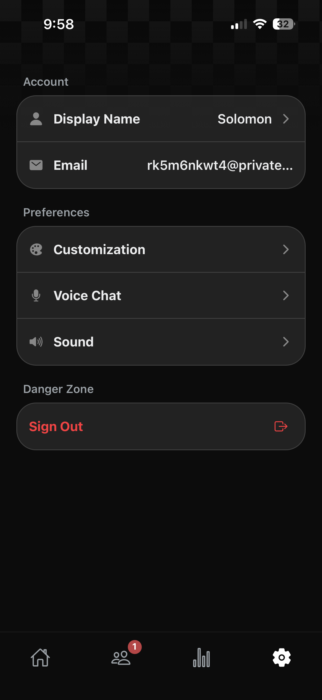
Edit Display Name
Tap your Display Name to change what other players see. Type in your new name and hit Save.
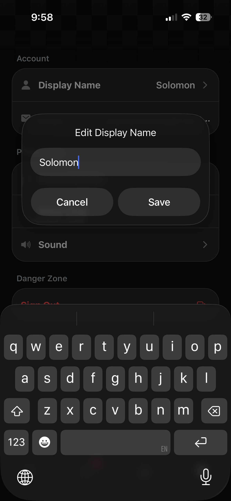
Avatar Customization
Under Customization, you can pick an Avatar from any chess piece — white or black, pawn through king. Your avatar appears next to your name on the home screen, in friend lists, and during games.
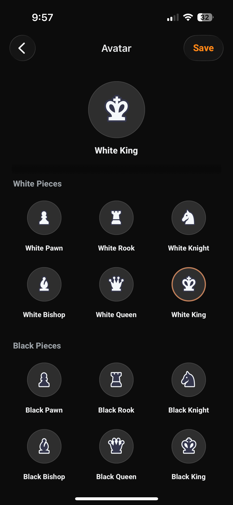
Board Themes
You can also swap your Board Theme to change the look of every game and puzzle. Choose from themes like Classic, Cherry Blossom, Sunset Orange, Midnight, Arctic Frost, Lavender Mist, and more. The preview updates in real time so you can see exactly how your games will look.
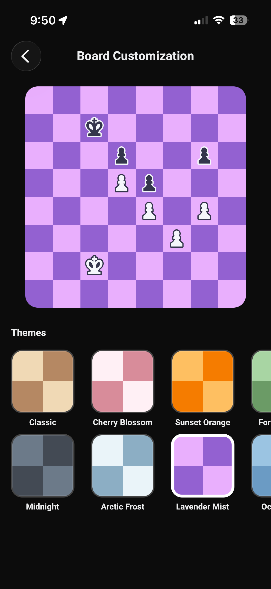
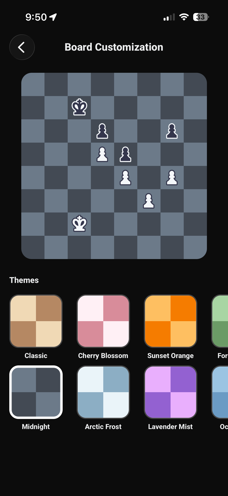